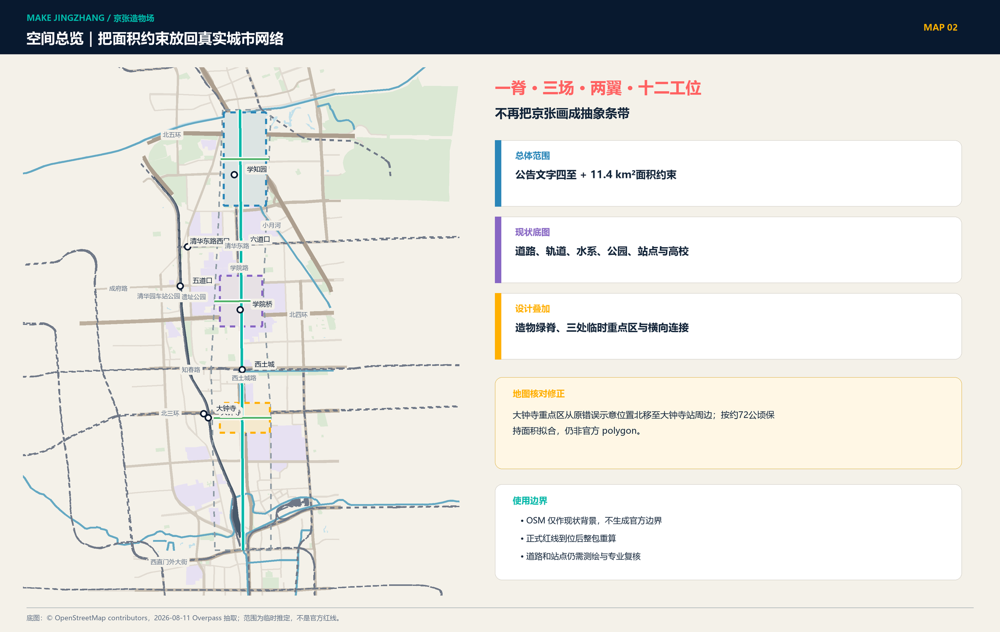
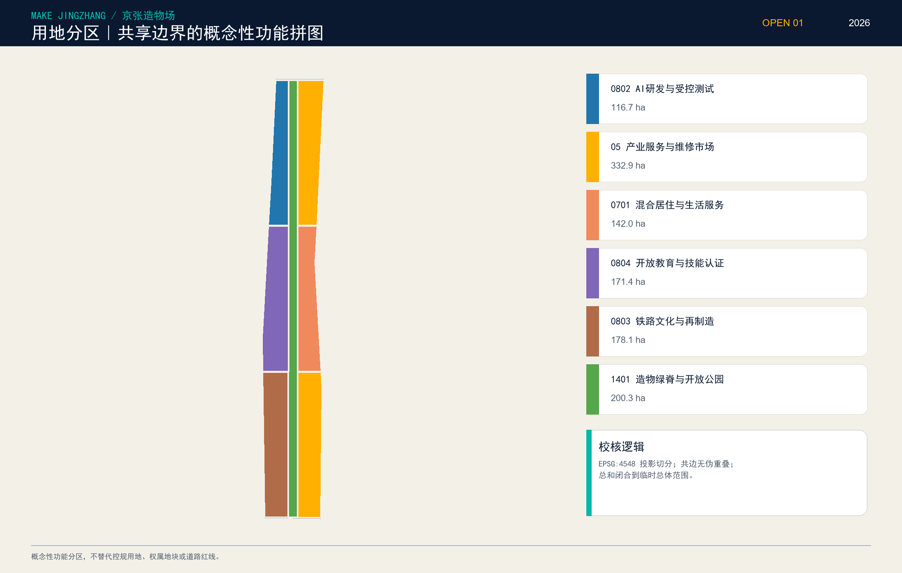
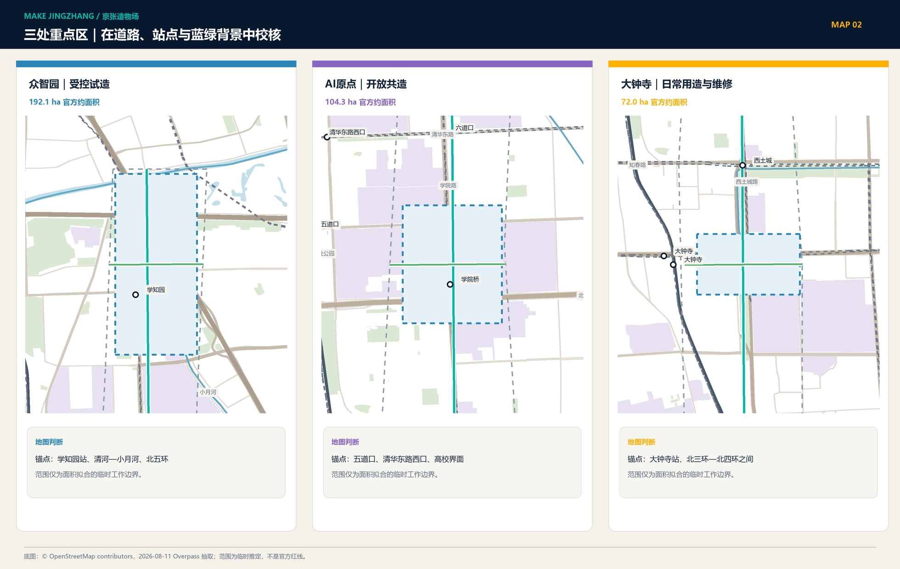
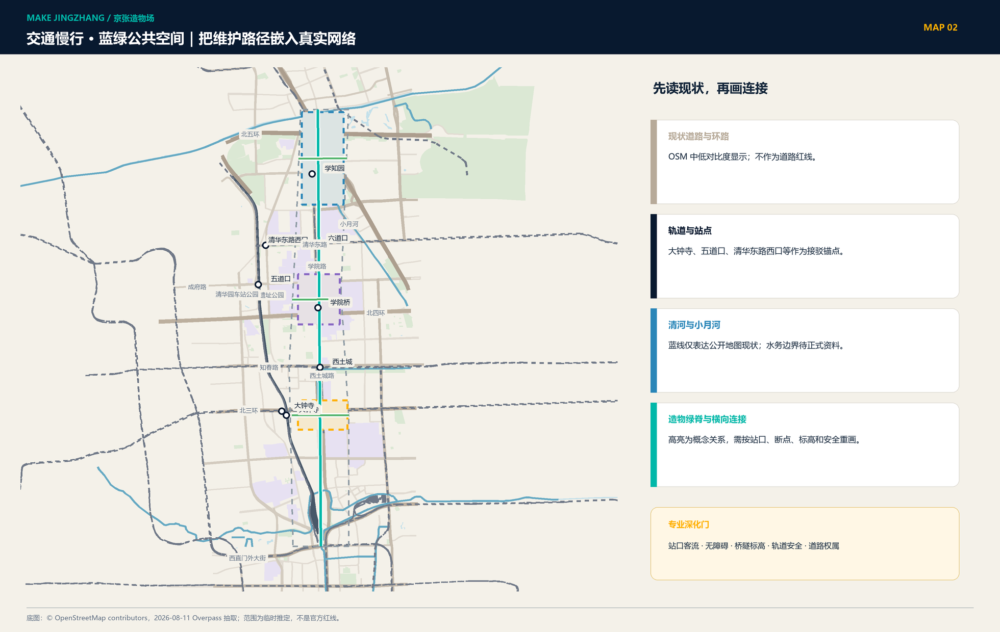
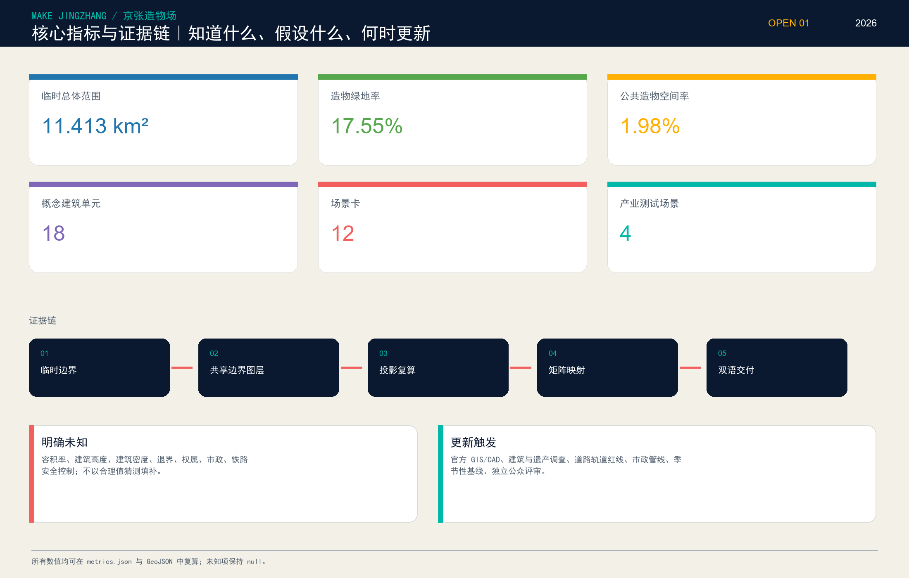

MAKE JINGZHANG / 京张造物场
把公共 AI 设备的制造、测试、使用、维修与退役，变成可见、可参与、可追责的城市创新链。
01
把一条造物绿脊、三座造物院与两翼服务网络放回道路、轨道、水系、公园和站点背景。

02
共享边界概念拼图，不替代法定用地。

03
众智园测试、AI原点共造、大钟寺维修；大钟寺占位已通过地图交叉核对纠正明显错位。

04
让维护路径与真实道路、站点和蓝绿背景建立可复核关系。

05
已知可复算，未知保持为空。
